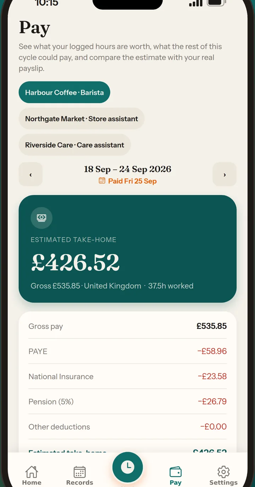

Gratuit
Gratuit
- 2 emplois actifs
- 1 modèle de service
- Pointage, Relevés et Paie
- Export CSV
- Rappels, widget et Activité en direct
- Fichier de sauvegarde, ou iCloud facultatif
Pour le travail à l’heure
Pointez, notez chaque emploi et voyez une estimation de ce que vous emporterez.

Un toucher pour le service du jour. Les pauses arrêtent le chronomètre. Les services de nuit sont compris, et vous pouvez corriger les heures avant d’enregistrer.
Regardez une semaine, un mois ou un cycle de paie. Plusieurs emplois peuvent figurer dans la même vue.
Le brut, puis l’impôt et les autres retenues que vous indiquez pour chaque emploi. Au Royaume-Uni et sur l’île de Man, cela peut être un montant illustratif de PAYE ou d’ITIP. Partout ailleurs, vous saisissez vos propres pourcentages. Ce sont des estimations, pas une fiche de paie.
Chaque emploi a son propre taux, ses heures sup., son indemnité de congés et son cycle de paie. Enregistrez un service comme modèle. L’offre gratuite comprend 2 emplois actifs et 1 modèle.
Un rappel avant un service et, en option, un signal lorsque vous arrivez sur un lieu de travail enregistré. Le widget de l’écran d’accueil montre la suite. Une Activité en direct reste affichée tant que vous êtes pointé.
Les emplois, les services et la paie restent sur l’iPhone. Exportez un fichier de sauvegarde ou un CSV, ou activez une copie facultative dans votre propre iCloud.



Gratuit
Mensuel
ou à l’année, avec 1 mois offert pour un nouvel abonné. L’App Store affiche le prix de votre pays. Lorsque l’année coûte moins que douze mois, l’écran d’abonnement indique combien vous économisez.
Le mensuel n’a pas d’essai gratuit. Le mois offert de l’abonnement annuel passe au prix annuel, sauf résiliation au moins 24 heures avant la fin. Apple facture l’abonnement. Les prix du bouton d’abonnement viennent de l’App Store. Les montants de paie dans l’app sont des estimations, pas une fiche de paie.
Ouvrez Graft, connectez-vous, puis allez dans Réglages → Compte. Le mensuel n’a pas d’essai gratuit. L’annuel comprend un mois offert pour un nouvel abonné, puis le prix annuel. Le forfait choisi affiche le prix de l’App Store, avec S’abonner et Restaurer les achats.
Sur le même iPhone, avec l’Apple ID qui a acheté Premium, ouvrez Réglages → Compte → Restaurer les achats. La restauration place Premium sur le compte Graft auquel vous êtes connecté.
Graft ne peut pas résilier un abonnement Apple depuis l’app. Apple le facture et Apple le résilie.
Le mois offert de l’abonnement annuel passe au prix annuel, sauf résiliation au moins 24 heures avant la fin de l’essai. Ensuite, et pour le mensuel, résiliez au moins 24 heures avant la fin de la période afin d’arrêter le renouvellement suivant. Premium reste disponible jusqu’à la fin du temps déjà acquis. Supprimer l’app, ou supprimer votre compte Graft, ne résilie pas l’abonnement.
Le paiement, les renouvellements et les remboursements sont traités par Apple selon le Contrat de licence d’utilisateur final de l’application sous licence d’Apple.
Les chiffres de Graft sont des estimations, pas une fiche de paie. Graft ne connaît pas votre code d’imposition, votre prêt étudiant, ni toutes les retenues appliquées par votre employeur. Comparez l’estimation avec votre fiche de paie. La fiche de paie fait foi.
Les emplois, les services et la paie restent sur l’iPhone. La connexion (nom et e-mail) est assurée par Clerk. Une sauvegarde iCloud, si vous l’activez, va sur votre propre compte iCloud. Voir la Politique de confidentialité.
Résiliez dans les réglages de votre compte App Store, au moins 24 heures avant la fin d’un essai ou d’une période payante. Les étapes sont dans Abonnements. Supprimer Graft ne résilie pas l’abonnement.
Écrivez à GraftSupport@proton.me. Indiquez la version d’iOS et ce à quoi vous vous attendiez.
Les questions de confidentialité peuvent utiliser la même adresse. La Politique de confidentialité et les Conditions d’utilisation décrivent ce que l’app fait aujourd’hui.